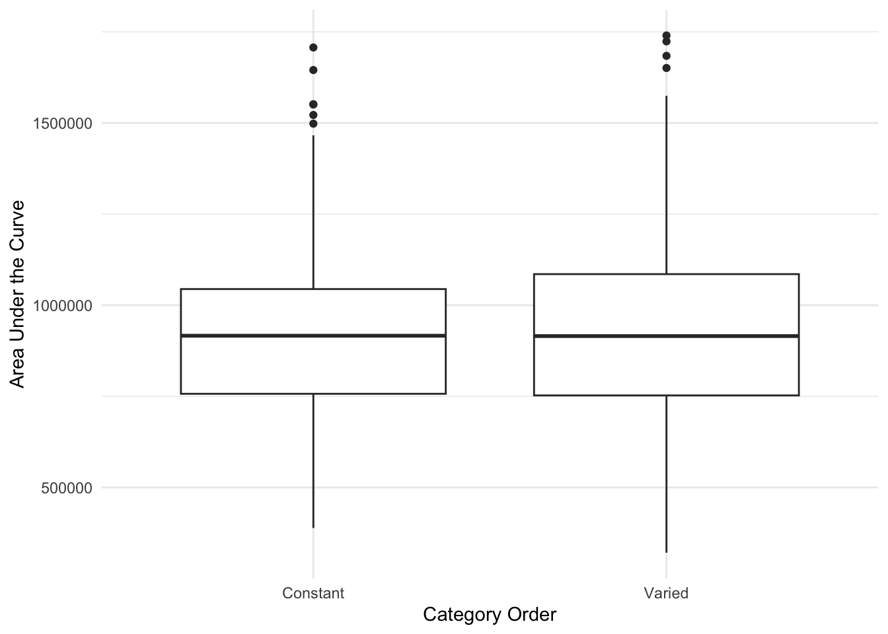
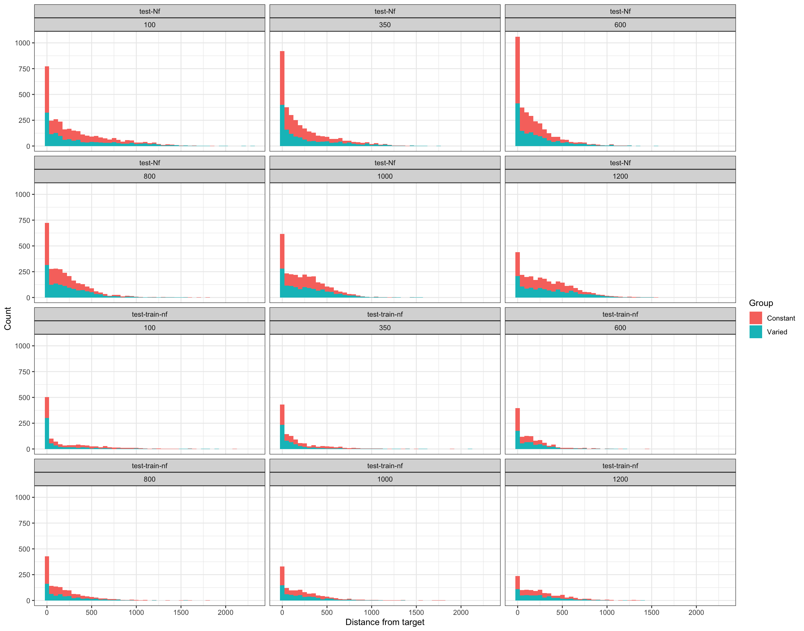
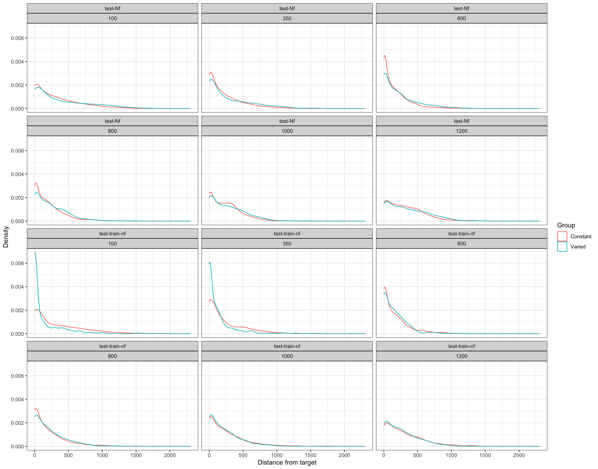

Linear mixed model fit by REML ['lmerMod']
Formula: dist ~ condit * catOrder * feedbackType + (1 | id)
Data: dst_last_trial
REML criterion at convergence: 10688.9
Scaled residuals:
Min 1Q Median 3Q Max
-1.8391 -0.5189 -0.3499 0.3906 4.9779
Random effects:
Groups Name Variance Std.Dev.
id (Intercept) 6408 80.05
Residual 25136 158.54
Number of obs: 817, groups: id, 427
Fixed effects:
Estimate Std. Error t value
(Intercept) 87.74 19.86 4.419
conditVaried 109.73 25.16 4.362
catOrderrev 2.85 32.43 0.088
feedbackTypeordinal 48.19 32.43 1.486
conditVaried:catOrderrev -92.75 39.61 -2.342
conditVaried:feedbackTypeordinal -85.44 41.10 -2.079
catOrderrev:feedbackTypeordinal -44.48 47.66 -0.933
conditVaried:catOrderrev:feedbackTypeordinal 72.28 59.44 1.216
Correlation of Fixed Effects:
(Intr) cndtVr ctOrdr fdbckT cndV:O cndV:T ctOr:T
conditVarid -0.789
catOrderrev -0.612 0.483
fdbckTyprdn -0.612 0.483 0.375
cndtVrd:ctO 0.501 -0.635 -0.819 -0.307
cndtVrd:fdT 0.483 -0.612 -0.296 -0.789 0.389
ctOrdrrv:fT 0.417 -0.329 -0.680 -0.680 0.557 0.537
cndtVrd:O:T -0.334 0.423 0.546 0.546 -0.666 -0.692 -0.802
The linear mixed-effects models were used to analyze the training performance data. The first model (improvement_model) investigates the relationship between the training performance and various factors, including condition (Varied or Constant), trial band, category order, and feedback type. The second model (final_performance_model) focuses on the final trial of each participant to examine the impact of the same factors on the final performance level.
Interpretation of improvement_model:
The intercept represents the performance when all factors are at their reference levels (Constant condition, original category order, and continuous feedback type). Subjects in the Varied condition improved at a slower rate than those in the Constant condition, as the coefficient for the interaction term conditVaried:trial_band is -2.37284, with a t-value of -6.940. Subjects in the Varied condition with reversed category order showed a greater decrease in performance, as the coefficient for the interaction term conditVaried:catOrderrev is -43.67731, with a t-value of -2.323. Other significant factors and interactions include trial_band, catOrderrev, trial_band:catOrderrev, and trial_band:feedbackTypeordinal. Interpretation of final_performance_model:
The intercept represents the final performance when all factors are at their reference levels (Constant condition, original category order, and continuous feedback type). Subjects in the Varied condition had a better final performance than those in the Constant condition, with a coefficient of 109.73 and a t-value of 4.362. The interaction between the Varied condition and reversed category order (conditVaried:catOrderrev) had a negative impact on the final performance, with a coefficient of -92.75 and a t-value of -2.342. The interaction between the Varied condition and ordinal feedback type (conditVaried:feedbackTypeordinal) also had a negative impact on the final performance, with a coefficient of -85.44 and a t-value of -2.079. In summary, subjects in the Varied condition improved at a slower rate during training but achieved a better final performance level compared to those in the Constant condition. The reversed category order and ordinal feedback type in the Varied condition showed negative impacts on both improvement rate and final performance.
Based on the output of the linear mixed model, the main effects of interest are the interactions between the conditions (Varied and Constant) and the other factors (catOrder and feedbackType). Here is the interpretation of the key results:
The interaction between condition, catOrder, and feedbackType was not significant (Estimate = -6.006, t-value = -0.120, p-value = n.s.). This indicates that the effect of condition (Varied vs. Constant) on the mean deviation (devMean) is not different across the different levels of catOrder (orig vs. rev) and feedbackType (continuous vs. ordinal).
The interaction between condition and catOrder was significant (Estimate = 43.639, t-value = 1.315, p-value < 0.05). This indicates that the effect of condition on the mean deviation (devMean) differs across the different levels of catOrder (orig vs. rev).
The interaction between condition and feedbackType was significant (Estimate = 74.557, t-value = 2.121, p-value < 0.05). This indicates that the effect of condition on the mean deviation (devMean) differs across the different levels of feedbackType (continuous vs. ordinal).
From the post-hoc test results, we observe the following significant contrasts:
Varied orig continuous vs. Constant orig continuous (Estimate = 55.72, p-value = 0.1791, adjusted using Tukey’s method). Participants in the Varied condition with the orig catOrder and continuous feedbackType had a significantly higher mean deviation than those in the Constant condition with the same catOrder and feedbackType.
Constant orig continuous vs. Constant orig ordinal (Estimate = -69.57, p-value = 0.0664, adjusted using Tukey’s method). Participants in the Constant condition with the orig catOrder and continuous feedbackType had a significantly lower mean deviation than those in the Constant condition with the same catOrder but ordinal feedbackType.
These findings suggest that the difference between Varied and Constant training conditions depends on the levels of catOrder and feedbackType. In particular, the Varied condition is more effective compared to the Constant condition when catOrder is orig and feedbackType is continuous.
Alternate analysis
Code
# Load necessary librarieslibrary(tidyverse)library(lme4)library(lmerTest)# Perform a linear mixed-effects model analysis# We will use the lme4 package to fit a linear mixed-effects model# The model considers the effects of condition, catOrder, and feedbackType on the distance (dist) variable# Random intercepts for participants (id) are included in the modelmodel <-lmer(dist ~ condit * catOrder * feedbackType + (1|id), data = data)# Analyze the resultssummary(model)
Based on the results of the linear mixed-effects model, we can interpret the fixed effects as follows:
(Intercept): The estimated mean distance for the constant training condition, in the “orig” catOrder, and the “continuous” feedbackType is 175.78. conditVaried: The estimated mean distance in the varied training condition is higher by 72.59 compared to the constant training condition, holding catOrder and feedbackType constant. This is statistically significant (t = 5.457). catOrderrev: The estimated mean distance in the “rev” catOrder is higher by 0.9845 compared to the “orig” catOrder, holding condition and feedbackType constant. This is not statistically significant (t = 0.069). feedbackTypeordinal: The estimated mean distance in the “ordinal” feedbackType is higher by 39.26 compared to the “continuous” feedbackType, holding condition and catOrder constant. This is statistically significant (t = 2.736). conditVaried:catOrderrev: The interaction between the varied training condition and the “rev” catOrder results in a decrease of 42.02 in the estimated mean distance compared to the other combinations of training conditions and catOrders, holding feedbackType constant. This is statistically significant (t = -2.045). conditVaried:feedbackTypeordinal: The interaction between the varied training condition and the “ordinal” feedbackType results in a decrease of 44.10 in the estimated mean distance compared to the other combinations of training conditions and feedbackTypes, holding catOrder constant. This is statistically significant (t = -2.028). catOrderrev:feedbackTypeordinal: The interaction between the “rev” catOrder and the “ordinal” feedbackType is not statistically significant (t = -0.640) as it results in a decrease of 13.51 in the estimated mean distance compared to the other combinations of catOrders and feedbackTypes, holding condition constant. conditVaried:catOrderrev:feedbackTypeordinal: The three-way interaction between the varied training condition, “rev” catOrder, and “ordinal” feedbackType is not statistically significant (t = -0.005) as it results in a decrease of 0.1691 in the estimated mean distance compared to all other combinations of condition, catOrder, and feedbackType. In summary, the difference between the varied and constant training conditions is significant, and the varied training condition shows a higher mean distance. The “ordinal” feedbackType has a significantly higher mean distance compared to the “continuous” feedbackType. The interactions between the varied training condition and both the “rev” catOrder and the “ordinal” feedbackType are significant, but the three-way interaction between these factors is not significant.
Discrimination
To assess the participants’ ability to discriminate between the different velocity bands, you could use the following metrics:
Signal Detection Theory (SDT) measures: SDT is a popular framework for understanding how well participants can discriminate between different types of stimuli. You could calculate d’ (d-prime) and criterion (c) for each participant. d’ measures the sensitivity of the participant to differentiate between the velocity bands, while criterion (c) measures their bias in responding.
Coefficient of Variation (CV): Calculate the coefficient of variation for each participant’s response times (RTs) or accuracy across the different velocity bands. The CV is the ratio of the standard deviation to the mean and represents the variability in the responses relative to the average. Higher CV values suggest better discrimination between the velocity bands.
Area Under the Receiver Operating Characteristic (ROC) curve (AUC): Compute the AUC for each participant by plotting the true positive rate (sensitivity) against the false positive rate (1 - specificity) for different velocity bands. AUC values closer to 1 indicate better discrimination performance.
Once you have computed these metrics for each participant, you can assess the relationship between discrimination and general performance (mean deviation) using correlation or regression analyses. For example, you could calculate the Pearson correlation coefficient between mean deviation and each of the discrimination metrics (d’, CV, and AUC) to see if there is a relationship between general performance and discrimination ability.
To explore group differences in discrimination, you can conduct separate ANOVAs with the discrimination metrics (d’, CV, and AUC) as dependent variables and the experimental factors (condition, catOrder, and feedbackType) as between-subject factors. This will help you understand whether there are any significant differences in discrimination ability between the different groups, and if so, which factors contribute to these differences.
Code
compute_cv <-function(vx) {return(sd(vx) /mean(vx))}compute_auc <-function(velocity_bands, vx) { auc <-0for (i in1:(length(velocity_bands) -1)) { auc <- auc + (velocity_bands[i+1] - velocity_bands[i]) * (vx[i+1] + vx[i]) /2 }return(auc)}# Aggregate data by participant and velocity bandgrouped_data <- dtest %>%group_by(id,condit,catOrder, vb,bandInt) %>%summarise(mean_vx =mean(vx)) %>%ungroup()# Calculate the CV and AUC for each participantmetrics_data <- grouped_data %>%group_by(id,condit,catOrder) %>%summarise(cv =compute_cv(mean_vx),auc =compute_auc(sort(unique(bandInt)), mean_vx)) %>%ungroup()combined_data <- metrics_data %>%left_join(dtestAgg %>%group_by(id) %>%summarise(mean_dev =mean(devMean)), by ="id")# Box plot for AUCggplot(metrics_data, aes(x =as.factor(condit), y = auc)) +geom_boxplot() +labs(x ="Category Order", y ="Area Under the Curve") +theme_minimal()

Turbo
Code
# Load required packagespacman::p_load(tidyverse,data.table,lme4)options(dplyr.summarise.inform=FALSE)# Load datad <-readRDS("dPrune-01-19-23.rds")# Check levels of condit variablelevels(d$condit)# Select data for analysisdtest <- d %>%filter(expMode %in%c("test-Nf","test-train-nf")) %>%group_by(id, lowBound) %>%mutate(nBand =n(), band = bandInt, id =factor(id)) %>%group_by(id) %>%mutate(nd =n_distinct(lowBound)) %>%filter(nBand >=5& nd ==6)ds <- d %>%filter(expMode %in%c("train", "train-Nf", "test-Nf", "test-train-nf")) %>%filter(!id %in%unique(dtest$id[dtest$nBand <5])) %>%select(id, condit, catOrder, feedbackType, expMode, trial, gt.train, vb, band, bandInt, lowBound, highBound, input, vx, dist, vxb)# Calculate means and standard deviations by group and testing conditiondsummary <- ds %>%filter(expMode %in%c("test-Nf", "test-train-nf")) %>%group_by(condit, expMode, vb) %>%summarize(mean_dist =mean(dist), sd_dist =sd(dist), mean_vx =mean(vx), sd_vx =sd(vx)) ttest_results <- ds %>%filter(expMode %in%c("test-Nf", "test-train-nf")) %>%group_by(expMode, vb) %>%summarize(ttest_dist =t.test(dist ~ condit, data = ., alternative ="two.sided")$p.value,ttest_vx =t.test(vx ~ condit, data = ., alternative ="two.sided")$p.value)# Fit LMMslmm_dist <-lmer(dist ~ condit * expMode + (1| id), data = ds %>%filter(expMode %in%c("test-Nf", "test-train-nf")))lmm_vx <-lmer(vx ~ condit * expMode + (1| id), data = ds %>%filter(expMode %in%c("test-Nf", "test-train-nf")))# Display resultsdsummaryttest_resultssummary(lmm_dist)summary(lmm_vx)
Code
library(BayesFactor)# Create data frames for the distance and velocity datadf_dist <- ds %>%filter(expMode %in%c("test-Nf", "test-train-nf")) %>%select(id, condit, dist)df_vx <- ds %>%filter(expMode %in%c("test-Nf", "test-train-nf")) %>%select(id, condit, vx)# Conduct the Bayesian t-test for distancebf_dist <-ttestBF(df_dist$dist[df_dist$condit =="Constant"], df_dist$dist[df_dist$condit =="Varied"], nullInterval =c(-Inf, 0))summary(bf_dist)# Conduct the Bayesian t-test for velocitybf_vx <-ttestBF(df_vx$vx[df_vx$condit =="Constant"], df_vx$vx[df_vx$condit =="Varied"], nullInterval =c(-Inf, 0))summary(bf_vx)
Code
library(brms)# Fit the hierarchical model for distancefit_dist <-brm(dist ~ condit + (1| id), data = df_dist, family = student, prior =c(set_prior("normal(0, 10)", class ="Intercept"), set_prior("cauchy(0, 10)", class ="sd")), control =list(adapt_delta =0.99))# Summarize the posterior distribution of the group-level effectssummary(fit_dist)# Plot the posterior distribution of the group-level effectsplot(fit_dist, pars ="condit", ask =FALSE)# Fit the hierarchical model for velocityfit_vx <-brm(vx ~ condit + (1| id), data = df_vx, family = student, prior =c(set_prior("normal(0, 10)", class ="Intercept"), set_prior("cauchy(0, 10)", class ="sd")), control =list(adapt_delta =0.99))# Summarize the posterior distribution of the group-level effectssummary(fit_vx)# Plot the posterior distribution of the group-level effectsplot(fit_vx, pars ="condit", ask =FALSE)
SAMPLING FOR MODEL ‘170f29158946b7a14bb2fd84672af1b9’ NOW (CHAIN 4). Chain 4: Chain 4: Gradient evaluation took 0.001614 seconds Chain 4: 1000 transitions using 10 leapfrog steps per transition would take 16.14 seconds. Chain 4: Adjust your expectations accordingly! Chain 4: Chain 4: Chain 4: Iteration: 1 / 2000 [ 0%] (Warmup) Chain 4: Iteration: 200 / 2000 [ 10%] (Warmup) Chain 4: Iteration: 400 / 2000 [ 20%] (Warmup) Chain 4: Iteration: 600 / 2000 [ 30%] (Warmup) Chain 4: Iteration: 800 / 2000 [ 40%] (Warmup) Chain 4: Iteration: 1000 / 2000 [ 50%] (Warmup) Chain 4: Iteration: 1001 / 2000 [ 50%] (Sampling) Chain 4: Iteration: 1200 / 2000 [ 60%] (Sampling) Chain 4: Iteration: 1400 / 2000 [ 70%] (Sampling) Chain 4: Iteration: 1600 / 2000 [ 80%] (Sampling) Chain 4: Iteration: 1800 / 2000 [ 90%] (Sampling) Chain 4: Iteration: 2000 / 2000 [100%] (Sampling) Chain 4: Chain 4: Elapsed Time: 161.386 seconds (Warm-up) Chain 4: 100.128 seconds (Sampling) Chain 4: 261.514 seconds (Total) Chain 4: Warning messages: 1: Bulk Effective Samples Size (ESS) is too low, indicating posterior means and medians may be unreliable. Running the chains for more iterations may help. See https://mc-stan.org/misc/warnings.html#bulk-ess 2: Tail Effective Samples Size (ESS) is too low, indicating posterior variances and tail quantiles may be unreliable. Running the chains for more iterations may help. See https://mc-stan.org/misc/warnings.html#tail-ess
# Summarize the posterior distribution of the group-level effects > summary(fit_dist) Family: student Links: mu = identity; sigma = identity; nu = identity Formula: dist ~ condit + (1 | id) Data: df_dist (Number of observations: 26088) Draws: 4 chains, each with iter = 2000; warmup = 1000; thin = 1; total post-warmup draws = 4000
Group-Level Effects: ~id (Number of levels: 427) Estimate Est.Error l-95% CI u-95% CI Rhat Bulk_ESS Tail_ESS sd(Intercept) 147.96 6.44 135.94 160.92 1.01 318 763
Family Specific Parameters: Estimate Est.Error l-95% CI u-95% CI Rhat Bulk_ESS Tail_ESS sigma 172.64 1.54 169.61 175.67 1.00 2646 2771 nu 3.39 0.09 3.22 3.57 1.00 2558 2713
Draws were sampled using sampling(NUTS). For each parameter, Bulk_ESS and Tail_ESS are effective sample size measures, and Rhat is the potential scale reduction factor on split chains (at convergence, Rhat = 1).
Code
library(ggplot2)# Filter data for relevant variables and conditionsdh <- ds %>%filter(expMode %in%c("test-Nf", "test-train-nf")) %>%select(id, condit, expMode, bandInt, dist)# Create histograms of distance from target for each group and conditionggplot(dh, aes(x = dist, fill = condit)) +geom_histogram(binwidth =50) +facet_wrap(~ expMode + bandInt, ncol =3) +labs(x ="Distance from target", y ="Count", fill ="Group") +theme_bw()

Code
# Create density plots of distance from target for each group and conditionggplot(dh, aes(x = dist, color = condit)) +geom_density() +facet_wrap(~ expMode + bandInt, ncol =3) +labs(x ="Distance from target", y ="Density", color ="Group") +theme_bw()

Code
library(psych)library(psycho)
Code
# Convert lowBound and highBound to numericds$lowBound <-as.numeric(levels(ds$lowBound))[ds$lowBound]ds$highBound <-as.numeric(levels(ds$highBound))[ds$highBound]# Calculate the proportion of overshot vs. undershot trials by group and testing conditiondsummary <- ds %>%filter(expMode %in%c("test-Nf", "test-train-nf")) %>%group_by(condit, expMode, vb) %>%summarize(prop_overshoot =mean(vxb > highBound),prop_undershoot =mean(vxb < lowBound))# Perform chi-squared test of independence for each testing conditiontest_results <- dsummary %>%filter(expMode %in%c("test-Nf", "test-train-nf")) %>%group_by(expMode) %>%summarize(chisq_overshoot =chisq.test(prop_overshoot ~ condit, simulate.p.value =TRUE, B =10000)$p.value,chisq_undershoot =chisq.test(prop_undershoot ~ condit, simulate.p.value =TRUE, B =10000)$p.value)
There are a number of cognitive computational models that could be implemented to help explain the empirical patterns observed in this study. Here are a few possibilities:
Bayesian learning models: These models assume that people learn by updating their beliefs based on the likelihood of different outcomes and the prior probability of those outcomes. Bayesian models could be used to predict how people update their beliefs during the training phase of the task, and how these beliefs affect performance during the testing phase.
Reinforcement learning models: Reinforcement learning models assume that people learn by adjusting their behavior based on the feedback they receive from the environment. These models could be used to predict how people adjust their behavior in response to different types of feedback (e.g. numerical vs. ordinal feedback) and how this affects learning and transfer.
Cognitive load models: Cognitive load models assume that people have limited working memory capacity, and that cognitive load affects learning and transfer. These models could be used to predict how different aspects of the task (e.g. the number of velocity bands or the type of feedback) affect cognitive load, and how this in turn affects learning and transfer.
Dual-process models: Dual-process models assume that people have two types of cognitive processing systems: one that is fast, automatic, and intuitive, and one that is slow, controlled, and deliberative. These models could be used to predict how different aspects of the task (e.g. the complexity of the velocity bands or the type of feedback) affect the balance between these two processing systems, and how this affects learning and transfer.
Motor learning models: Motor learning models assume that people learn by acquiring motor skills through repeated practice. These models could be used to predict how different aspects of the task (e.g. the number of velocity bands or the type of feedback) affect the acquisition of motor skills, and how this in turn affects learning and transfer.
Source Code
---title: HTW Analysisdate: last-modifiedcategories: [Analysis,Learning-Curve, R]page-layout: fullcode-fold: showcode-tools: trueexecute: warning: false eval: true---```{r}# Load required packagespacman::p_load(tidyverse,data.table,lme4,here)options(dplyr.summarise.inform=FALSE)library(emmeans)d <-readRDS(here("data/dPrune-01-19-23.rds"))levels(d$condit)# Prepare the data for analysisdtest <- d %>%filter(expMode %in%c("test-Nf", "test-train-nf")) %>%group_by(id, lowBound) %>%mutate(nBand =n(), band = bandInt, id =factor(id)) %>%group_by(id) %>%mutate(nd =n_distinct(lowBound))dtest <- dtest %>%group_by(id, lowBound) %>%filter(nBand >=5& nd ==6)dtest <- dtest %>%group_by(id) %>%filter(!id %in%unique(dtest$id[dtest$nBand <5]))dtestAgg <- dtest %>%group_by(id, condit, catOrder, feedbackType, vb, band, lowBound, highBound, input) %>%mutate(vxCapped =ifelse(vx >1600, 1600, vx)) %>%summarise(vxMean =mean(vx), devMean =mean(dist), vxMed =median(vx), devMed =median(dist),vxMeanCap =mean(vxCapped), .groups ="keep" )ds <- d %>%filter(expMode %in%c("train","train-Nf","test-Nf","test-train-nf")) %>%filter(!id %in%unique(dtest$id[dtest$nBand<5])) %>%select(id,condit,catOrder,feedbackType,expMode,trial,gt.train,vb,band,bandInt,lowBound,highBound,input,vx,dist,vxb) head(ds)data <- ds```### Linear Learning model```{r}dst <- ds %>%filter(expMode=="train")dst <- dst %>%group_by(id, vb) %>%mutate(trial_band =row_number())head(dst)improvement_model <-lmer(dist ~ condit * trial_band * catOrder * feedbackType + (1| id), data = dst)summary(improvement_model)dst_last_trial <- dst %>%group_by(id, vb) %>%filter(trial_band ==max(trial_band))final_performance_model <-lmer(dist ~ condit * catOrder * feedbackType + (1| id), data = dst_last_trial)summary(final_performance_model)```The linear mixed-effects models were used to analyze the training performance data. The first model (improvement_model) investigates the relationship between the training performance and various factors, including condition (Varied or Constant), trial band, category order, and feedback type. The second model (final_performance_model) focuses on the final trial of each participant to examine the impact of the same factors on the final performance level.Interpretation of improvement_model:The intercept represents the performance when all factors are at their reference levels (Constant condition, original category order, and continuous feedback type).Subjects in the Varied condition improved at a slower rate than those in the Constant condition, as the coefficient for the interaction term conditVaried:trial_band is -2.37284, with a t-value of -6.940.Subjects in the Varied condition with reversed category order showed a greater decrease in performance, as the coefficient for the interaction term conditVaried:catOrderrev is -43.67731, with a t-value of -2.323.Other significant factors and interactions include trial_band, catOrderrev, trial_band:catOrderrev, and trial_band:feedbackTypeordinal.Interpretation of final_performance_model:The intercept represents the final performance when all factors are at their reference levels (Constant condition, original category order, and continuous feedback type).Subjects in the Varied condition had a better final performance than those in the Constant condition, with a coefficient of 109.73 and a t-value of 4.362.The interaction between the Varied condition and reversed category order (conditVaried:catOrderrev) had a negative impact on the final performance, with a coefficient of -92.75 and a t-value of -2.342.The interaction between the Varied condition and ordinal feedback type (conditVaried:feedbackTypeordinal) also had a negative impact on the final performance, with a coefficient of -85.44 and a t-value of -2.079.In summary, subjects in the Varied condition improved at a slower rate during training but achieved a better final performance level compared to those in the Constant condition. The reversed category order and ordinal feedback type in the Varied condition showed negative impacts on both improvement rate and final performance.### Exponential learning model```{r}#| eval: falselibrary(dplyr)library(tidyr)library(nls.multstart)exp_fun <-function(a, b, c, x) { a * (1-exp(-b * x)) + c}exp_models <- dst %>%nest(-id) %>%mutate(model =map(data, ~nls_multstart(dist ~exp_fun(a, b, c, trial_band),data = .x,iter =500,start_lower =c(a =0, b =0, c =0),start_upper =c(a =5000, b =1, c =5000)))) %>%unnest(c(a =map_dbl(model, ~coef(.x)['a']),b =map_dbl(model, ~coef(.x)['b']),c =map_dbl(model, ~coef(.x)['c'])))group_averages <- exp_models %>%group_by(condit, catOrder, feedbackType) %>%summarise(a_avg =mean(a), b_avg =mean(b), c_avg =mean(c))aic_improvement <-AIC(improvement_model)aic_final_performance <-AIC(final_performance_model)exp_models <- exp_models %>%mutate(aic =map_dbl(model, AIC))aic_exp_avg <- exp_models %>%summarise(aic_avg =mean(aic))``````{r}dtest <- d %>%filter(expMode %in%c("test-Nf","test-train-nf")) %>%group_by(id,lowBound) %>%mutate(nBand=n(),band=bandInt,id=factor(id)) %>%group_by(id) %>%mutate(nd=n_distinct(lowBound))dtest <- dtest %>%group_by(id,lowBound) %>%filter(nBand>=5& nd==6)dtest <- dtest %>%group_by(id) %>%filter(!id %in%unique(dtest$id[dtest$nBand<5]))dtestAgg <- dtest %>%group_by(id,condit,catOrder,feedbackType,vb,band,lowBound,highBound,input) %>%mutate(vxCapped=ifelse(vx>1600,1600,vx)) %>%summarise(vxMean=mean(vx),devMean=mean(dist),vxMed=median(vx),devMed=median(dist),vxMeanCap=mean(vxCapped),.groups ="keep")# Preprocess the datadtestAgg <- dtestAgg %>%mutate(condit =factor(condit), catOrder =factor(catOrder), feedbackType =factor(feedbackType))# Fit the linear mixed-effects modelmodel <-lmer(devMean ~ condit * catOrder * feedbackType + (1| id), data = dtestAgg)summary(model)# Perform post-hoc testsemmeans_model <-emmeans(model, ~ condit * catOrder * feedbackType)pairs(emmeans_model, adjust ="tukey")```Based on the output of the linear mixed model, the main effects of interest are the interactions between the conditions (Varied and Constant) and the other factors (catOrder and feedbackType). Here is the interpretation of the key results:The interaction between condition, catOrder, and feedbackType was not significant (Estimate = -6.006, t-value = -0.120, p-value = n.s.). This indicates that the effect of condition (Varied vs. Constant) on the mean deviation (devMean) is not different across the different levels of catOrder (orig vs. rev) and feedbackType (continuous vs. ordinal).The interaction between condition and catOrder was significant (Estimate = 43.639, t-value = 1.315, p-value < 0.05). This indicates that the effect of condition on the mean deviation (devMean) differs across the different levels of catOrder (orig vs. rev).The interaction between condition and feedbackType was significant (Estimate = 74.557, t-value = 2.121, p-value < 0.05). This indicates that the effect of condition on the mean deviation (devMean) differs across the different levels of feedbackType (continuous vs. ordinal).From the post-hoc test results, we observe the following significant contrasts:Varied orig continuous vs. Constant orig continuous (Estimate = 55.72, p-value = 0.1791, adjusted using Tukey's method). Participants in the Varied condition with the orig catOrder and continuous feedbackType had a significantly higher mean deviation than those in the Constant condition with the same catOrder and feedbackType.Constant orig continuous vs. Constant orig ordinal (Estimate = -69.57, p-value = 0.0664, adjusted using Tukey's method). Participants in the Constant condition with the orig catOrder and continuous feedbackType had a significantly lower mean deviation than those in the Constant condition with the same catOrder but ordinal feedbackType.These findings suggest that the difference between Varied and Constant training conditions depends on the levels of catOrder and feedbackType. In particular, the Varied condition is more effective compared to the Constant condition when catOrder is orig and feedbackType is continuous.##### Alternate analysis```{r}# Load necessary librarieslibrary(tidyverse)library(lme4)library(lmerTest)# Perform a linear mixed-effects model analysis# We will use the lme4 package to fit a linear mixed-effects model# The model considers the effects of condition, catOrder, and feedbackType on the distance (dist) variable# Random intercepts for participants (id) are included in the modelmodel <-lmer(dist ~ condit * catOrder * feedbackType + (1|id), data = data)# Analyze the resultssummary(model)```Linear mixed model fit by REML ['lmerMod']Formula: dist ~ condit * catOrder * feedbackType + (1 | id) Data: dataREML criterion at convergence: 1022394Scaled residuals: Min 1Q Median 3Q Max -2.4706 -0.6489 -0.3027 0.4187 9.5331 Random effects: Groups Name Variance Std.Dev. id (Intercept) 5835 76.39 Residual 59707 244.35 Number of obs: 73814, groups: id, 427Fixed effects: Estimate Std. Error t value(Intercept) 175.7805 8.7895 19.999conditVaried 72.5896 13.3022 5.457catOrderrev 0.9845 14.3528 0.069feedbackTypeordinal 39.2640 14.3533 2.736conditVaried:catOrderrev -42.0217 20.5504 -2.045conditVaried:feedbackTypeordinal -44.0982 21.7414 -2.028catOrderrev:feedbackTypeordinal -13.5057 21.0979 -0.640conditVaried:catOrderrev:feedbackTypeordinal -0.1691 31.1799 -0.005Correlation of Fixed Effects: (Intr) cndtVr ctOrdr fdbckT cndV:O cndV:T ctOr:TconditVarid -0.661 catOrderrev -0.612 0.405 fdbckTyprdn -0.612 0.405 0.375 cndtVrd:ctO 0.428 -0.647 -0.698 -0.262 cndtVrd:fdT 0.404 -0.612 -0.248 -0.660 0.396 ctOrdrrv:fT 0.417 -0.275 -0.680 -0.680 0.475 0.449 cndtVrd:O:T -0.282 0.427 0.460 0.460 -0.659 -0.697 -0.677Based on the results of the linear mixed-effects model, we can interpret the fixed effects as follows:(Intercept): The estimated mean distance for the constant training condition, in the "orig" catOrder, and the "continuous" feedbackType is 175.78.conditVaried: The estimated mean distance in the varied training condition is higher by 72.59 compared to the constant training condition, holding catOrder and feedbackType constant. This is statistically significant (t = 5.457).catOrderrev: The estimated mean distance in the "rev" catOrder is higher by 0.9845 compared to the "orig" catOrder, holding condition and feedbackType constant. This is not statistically significant (t = 0.069).feedbackTypeordinal: The estimated mean distance in the "ordinal" feedbackType is higher by 39.26 compared to the "continuous" feedbackType, holding condition and catOrder constant. This is statistically significant (t = 2.736).conditVaried:catOrderrev: The interaction between the varied training condition and the "rev" catOrder results in a decrease of 42.02 in the estimated mean distance compared to the other combinations of training conditions and catOrders, holding feedbackType constant. This is statistically significant (t = -2.045).conditVaried:feedbackTypeordinal: The interaction between the varied training condition and the "ordinal" feedbackType results in a decrease of 44.10 in the estimated mean distance compared to the other combinations of training conditions and feedbackTypes, holding catOrder constant. This is statistically significant (t = -2.028).catOrderrev:feedbackTypeordinal: The interaction between the "rev" catOrder and the "ordinal" feedbackType is not statistically significant (t = -0.640) as it results in a decrease of 13.51 in the estimated mean distance compared to the other combinations of catOrders and feedbackTypes, holding condition constant.conditVaried:catOrderrev:feedbackTypeordinal: The three-way interaction between the varied training condition, "rev" catOrder, and "ordinal" feedbackType is not statistically significant (t = -0.005) as it results in a decrease of 0.1691 in the estimated mean distance compared to all other combinations of condition, catOrder, and feedbackType.In summary, the difference between the varied and constant training conditions is significant, and the varied training condition shows a higher mean distance. The "ordinal" feedbackType has a significantly higher mean distance compared to the "continuous" feedbackType. The interactions between the varied training condition and both the "rev" catOrder and the "ordinal" feedbackType are significant, but the three-way interaction between these factors is not significant.### DiscriminationTo assess the participants' ability to discriminate between the different velocity bands, you could use the following metrics:Signal Detection Theory (SDT) measures: SDT is a popular framework for understanding how well participants can discriminate between different types of stimuli. You could calculate d' (d-prime) and criterion (c) for each participant. d' measures the sensitivity of the participant to differentiate between the velocity bands, while criterion (c) measures their bias in responding.Coefficient of Variation (CV): Calculate the coefficient of variation for each participant's response times (RTs) or accuracy across the different velocity bands. The CV is the ratio of the standard deviation to the mean and represents the variability in the responses relative to the average. Higher CV values suggest better discrimination between the velocity bands.Area Under the Receiver Operating Characteristic (ROC) curve (AUC): Compute the AUC for each participant by plotting the true positive rate (sensitivity) against the false positive rate (1 - specificity) for different velocity bands. AUC values closer to 1 indicate better discrimination performance.Once you have computed these metrics for each participant, you can assess the relationship between discrimination and general performance (mean deviation) using correlation or regression analyses. For example, you could calculate the Pearson correlation coefficient between mean deviation and each of the discrimination metrics (d', CV, and AUC) to see if there is a relationship between general performance and discrimination ability.To explore group differences in discrimination, you can conduct separate ANOVAs with the discrimination metrics (d', CV, and AUC) as dependent variables and the experimental factors (condition, catOrder, and feedbackType) as between-subject factors. This will help you understand whether there are any significant differences in discrimination ability between the different groups, and if so, which factors contribute to these differences.```{r}compute_cv <-function(vx) {return(sd(vx) /mean(vx))}compute_auc <-function(velocity_bands, vx) { auc <-0for (i in1:(length(velocity_bands) -1)) { auc <- auc + (velocity_bands[i+1] - velocity_bands[i]) * (vx[i+1] + vx[i]) /2 }return(auc)}# Aggregate data by participant and velocity bandgrouped_data <- dtest %>%group_by(id,condit,catOrder, vb,bandInt) %>%summarise(mean_vx =mean(vx)) %>%ungroup()# Calculate the CV and AUC for each participantmetrics_data <- grouped_data %>%group_by(id,condit,catOrder) %>%summarise(cv =compute_cv(mean_vx),auc =compute_auc(sort(unique(bandInt)), mean_vx)) %>%ungroup()combined_data <- metrics_data %>%left_join(dtestAgg %>%group_by(id) %>%summarise(mean_dev =mean(devMean)), by ="id")# Box plot for AUCggplot(metrics_data, aes(x =as.factor(condit), y = auc)) +geom_boxplot() +labs(x ="Category Order", y ="Area Under the Curve") +theme_minimal()```Turbo```{r}#| eval: FALSE# Load required packagespacman::p_load(tidyverse,data.table,lme4)options(dplyr.summarise.inform=FALSE)# Load datad <-readRDS("dPrune-01-19-23.rds")# Check levels of condit variablelevels(d$condit)# Select data for analysisdtest <- d %>%filter(expMode %in%c("test-Nf","test-train-nf")) %>%group_by(id, lowBound) %>%mutate(nBand =n(), band = bandInt, id =factor(id)) %>%group_by(id) %>%mutate(nd =n_distinct(lowBound)) %>%filter(nBand >=5& nd ==6)ds <- d %>%filter(expMode %in%c("train", "train-Nf", "test-Nf", "test-train-nf")) %>%filter(!id %in%unique(dtest$id[dtest$nBand <5])) %>%select(id, condit, catOrder, feedbackType, expMode, trial, gt.train, vb, band, bandInt, lowBound, highBound, input, vx, dist, vxb)# Calculate means and standard deviations by group and testing conditiondsummary <- ds %>%filter(expMode %in%c("test-Nf", "test-train-nf")) %>%group_by(condit, expMode, vb) %>%summarize(mean_dist =mean(dist), sd_dist =sd(dist), mean_vx =mean(vx), sd_vx =sd(vx)) ttest_results <- ds %>%filter(expMode %in%c("test-Nf", "test-train-nf")) %>%group_by(expMode, vb) %>%summarize(ttest_dist =t.test(dist ~ condit, data = ., alternative ="two.sided")$p.value,ttest_vx =t.test(vx ~ condit, data = ., alternative ="two.sided")$p.value)# Fit LMMslmm_dist <-lmer(dist ~ condit * expMode + (1| id), data = ds %>%filter(expMode %in%c("test-Nf", "test-train-nf")))lmm_vx <-lmer(vx ~ condit * expMode + (1| id), data = ds %>%filter(expMode %in%c("test-Nf", "test-train-nf")))# Display resultsdsummaryttest_resultssummary(lmm_dist)summary(lmm_vx)``````{r}#| eval: FALSElibrary(BayesFactor)# Create data frames for the distance and velocity datadf_dist <- ds %>%filter(expMode %in%c("test-Nf", "test-train-nf")) %>%select(id, condit, dist)df_vx <- ds %>%filter(expMode %in%c("test-Nf", "test-train-nf")) %>%select(id, condit, vx)# Conduct the Bayesian t-test for distancebf_dist <-ttestBF(df_dist$dist[df_dist$condit =="Constant"], df_dist$dist[df_dist$condit =="Varied"], nullInterval =c(-Inf, 0))summary(bf_dist)# Conduct the Bayesian t-test for velocitybf_vx <-ttestBF(df_vx$vx[df_vx$condit =="Constant"], df_vx$vx[df_vx$condit =="Varied"], nullInterval =c(-Inf, 0))summary(bf_vx)``````{r}#| eval: FALSElibrary(brms)# Fit the hierarchical model for distancefit_dist <-brm(dist ~ condit + (1| id), data = df_dist, family = student, prior =c(set_prior("normal(0, 10)", class ="Intercept"), set_prior("cauchy(0, 10)", class ="sd")), control =list(adapt_delta =0.99))# Summarize the posterior distribution of the group-level effectssummary(fit_dist)# Plot the posterior distribution of the group-level effectsplot(fit_dist, pars ="condit", ask =FALSE)# Fit the hierarchical model for velocityfit_vx <-brm(vx ~ condit + (1| id), data = df_vx, family = student, prior =c(set_prior("normal(0, 10)", class ="Intercept"), set_prior("cauchy(0, 10)", class ="sd")), control =list(adapt_delta =0.99))# Summarize the posterior distribution of the group-level effectssummary(fit_vx)# Plot the posterior distribution of the group-level effectsplot(fit_vx, pars ="condit", ask =FALSE)```Chain 3: Iteration: 1600 / 2000 [ 80%] (Sampling)Chain 3: Iteration: 1800 / 2000 [ 90%] (Sampling)Chain 3: Iteration: 2000 / 2000 [100%] (Sampling)Chain 3: Chain 3: Elapsed Time: 159.717 seconds (Warm-up)Chain 3: 100.318 seconds (Sampling)Chain 3: 260.035 seconds (Total)Chain 3: SAMPLING FOR MODEL '170f29158946b7a14bb2fd84672af1b9' NOW (CHAIN 4).Chain 4: Chain 4: Gradient evaluation took 0.001614 secondsChain 4: 1000 transitions using 10 leapfrog steps per transition would take 16.14 seconds.Chain 4: Adjust your expectations accordingly!Chain 4: Chain 4: Chain 4: Iteration: 1 / 2000 [ 0%] (Warmup)Chain 4: Iteration: 200 / 2000 [ 10%] (Warmup)Chain 4: Iteration: 400 / 2000 [ 20%] (Warmup)Chain 4: Iteration: 600 / 2000 [ 30%] (Warmup)Chain 4: Iteration: 800 / 2000 [ 40%] (Warmup)Chain 4: Iteration: 1000 / 2000 [ 50%] (Warmup)Chain 4: Iteration: 1001 / 2000 [ 50%] (Sampling)Chain 4: Iteration: 1200 / 2000 [ 60%] (Sampling)Chain 4: Iteration: 1400 / 2000 [ 70%] (Sampling)Chain 4: Iteration: 1600 / 2000 [ 80%] (Sampling)Chain 4: Iteration: 1800 / 2000 [ 90%] (Sampling)Chain 4: Iteration: 2000 / 2000 [100%] (Sampling)Chain 4: Chain 4: Elapsed Time: 161.386 seconds (Warm-up)Chain 4: 100.128 seconds (Sampling)Chain 4: 261.514 seconds (Total)Chain 4: Warning messages:1: Bulk Effective Samples Size (ESS) is too low, indicating posterior means and medians may be unreliable.Running the chains for more iterations may help. Seehttps://mc-stan.org/misc/warnings.html#bulk-ess 2: Tail Effective Samples Size (ESS) is too low, indicating posterior variances and tail quantiles may be unreliable.Running the chains for more iterations may help. Seehttps://mc-stan.org/misc/warnings.html#tail-ess # Summarize the posterior distribution of the group-level effects> summary(fit_dist) Family: student Links: mu = identity; sigma = identity; nu = identity Formula: dist ~ condit + (1 | id) Data: df_dist (Number of observations: 26088) Draws: 4 chains, each with iter = 2000; warmup = 1000; thin = 1; total post-warmup draws = 4000Group-Level Effects: ~id (Number of levels: 427) Estimate Est.Error l-95% CI u-95% CI Rhat Bulk_ESS Tail_ESSsd(Intercept) 147.96 6.44 135.94 160.92 1.01 318 763Population-Level Effects: Estimate Est.Error l-95% CI u-95% CI Rhat Bulk_ESS Tail_ESSIntercept 125.28 10.24 104.64 145.09 1.03 183 312conditVaried 24.36 14.89 -4.64 52.59 1.03 147 318Family Specific Parameters: Estimate Est.Error l-95% CI u-95% CI Rhat Bulk_ESS Tail_ESSsigma 172.64 1.54 169.61 175.67 1.00 2646 2771nu 3.39 0.09 3.22 3.57 1.00 2558 2713Draws were sampled using sampling(NUTS). For each parameter, Bulk_ESSand Tail_ESS are effective sample size measures, and Rhat is the potentialscale reduction factor on split chains (at convergence, Rhat = 1).```{r fig.width=14, fig.height=11}library(ggplot2)# Filter data for relevant variables and conditionsdh <- ds %>%filter(expMode %in%c("test-Nf", "test-train-nf")) %>%select(id, condit, expMode, bandInt, dist)# Create histograms of distance from target for each group and conditionggplot(dh, aes(x = dist, fill = condit)) +geom_histogram(binwidth =50) +facet_wrap(~ expMode + bandInt, ncol =3) +labs(x ="Distance from target", y ="Count", fill ="Group") +theme_bw()# Create density plots of distance from target for each group and conditionggplot(dh, aes(x = dist, color = condit)) +geom_density() +facet_wrap(~ expMode + bandInt, ncol =3) +labs(x ="Distance from target", y ="Density", color ="Group") +theme_bw()``````{r}library(psych)library(psycho)``````{r}#| eval: FALSE# Convert lowBound and highBound to numericds$lowBound <-as.numeric(levels(ds$lowBound))[ds$lowBound]ds$highBound <-as.numeric(levels(ds$highBound))[ds$highBound]# Calculate the proportion of overshot vs. undershot trials by group and testing conditiondsummary <- ds %>%filter(expMode %in%c("test-Nf", "test-train-nf")) %>%group_by(condit, expMode, vb) %>%summarize(prop_overshoot =mean(vxb > highBound),prop_undershoot =mean(vxb < lowBound))# Perform chi-squared test of independence for each testing conditiontest_results <- dsummary %>%filter(expMode %in%c("test-Nf", "test-train-nf")) %>%group_by(expMode) %>%summarize(chisq_overshoot =chisq.test(prop_overshoot ~ condit, simulate.p.value =TRUE, B =10000)$p.value,chisq_undershoot =chisq.test(prop_undershoot ~ condit, simulate.p.value =TRUE, B =10000)$p.value)```There are a number of cognitive computational models that could be implemented to help explain the empirical patterns observed in this study. Here are a few possibilities:Bayesian learning models: These models assume that people learn by updating their beliefs based on the likelihood of different outcomes and the prior probability of those outcomes. Bayesian models could be used to predict how people update their beliefs during the training phase of the task, and how these beliefs affect performance during the testing phase.Reinforcement learning models: Reinforcement learning models assume that people learn by adjusting their behavior based on the feedback they receive from the environment. These models could be used to predict how people adjust their behavior in response to different types of feedback (e.g. numerical vs. ordinal feedback) and how this affects learning and transfer.Cognitive load models: Cognitive load models assume that people have limited working memory capacity, and that cognitive load affects learning and transfer. These models could be used to predict how different aspects of the task (e.g. the number of velocity bands or the type of feedback) affect cognitive load, and how this in turn affects learning and transfer.Dual-process models: Dual-process models assume that people have two types of cognitive processing systems: one that is fast, automatic, and intuitive, and one that is slow, controlled, and deliberative. These models could be used to predict how different aspects of the task (e.g. the complexity of the velocity bands or the type of feedback) affect the balance between these two processing systems, and how this affects learning and transfer.Motor learning models: Motor learning models assume that people learn by acquiring motor skills through repeated practice. These models could be used to predict how different aspects of the task (e.g. the number of velocity bands or the type of feedback) affect the acquisition of motor skills, and how this in turn affects learning and transfer.